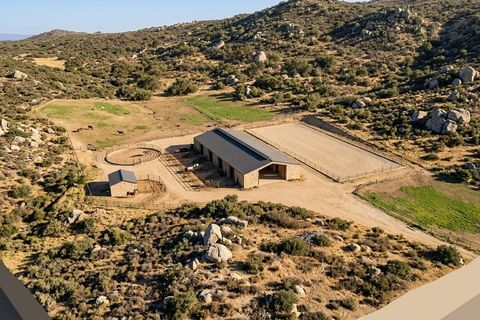
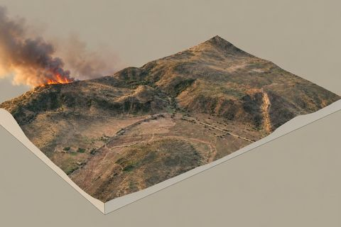
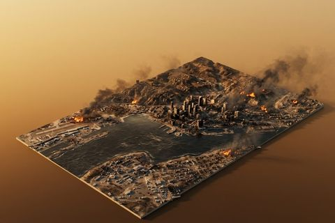
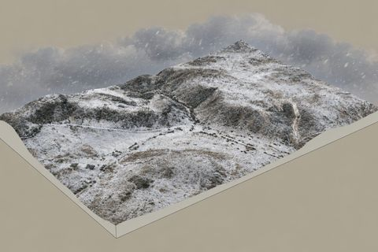

coyote_mountain_topo
site grading and drawing
real terrain anywhere on earth. grade it, sculpt it, watch the water, then export a drawing set, a print file, or a laser-cut cardboard model.
coyote_mountain_flight
drone survey planning
lay out a photogrammetry flight over the same terrain: overlap, ground sample size, batteries, terrain following, and mission files for the aircraft.
coyote_mountain_gallery
made with the tools
history animations, painted views of the model, drawing sheets and a drone survey as points.




the two tools share a place, a boundary, and any drone survey you load
for teachers · free for teaching, source available
for teachers · free for teaching, source available